ProSites delivers website design and digital marketing solutions that help healthcare practices attract and engage patients online. For this work, I developed visual assets that supported their conversion-focused approach, creating designs that balanced clarity, usability, and brand consistency across digital touchpoints. The focus was on producing polished, approachable visuals that aligned with their goal of driving measurable growth for clients.
Social Media
Downloadable Kits
I designed email headers that captured attention while maintaining brand consistency across campaigns. Through thoughtful use of typography, imagery, and color, I focused on communicating key messages clearly and effectively across devices.
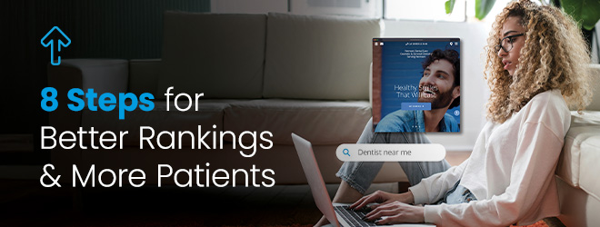
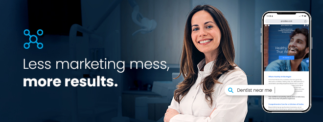
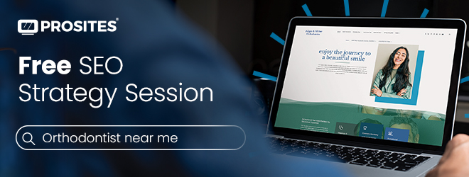
I designed social media ads that balanced visual impact with clear, concise messaging to engage audiences in fast-scrolling environments. By aligning with brand standards while adapting layouts, imagery, and hierarchy for different platforms, I created assets that supported campaign goals and performed effectively across channels.
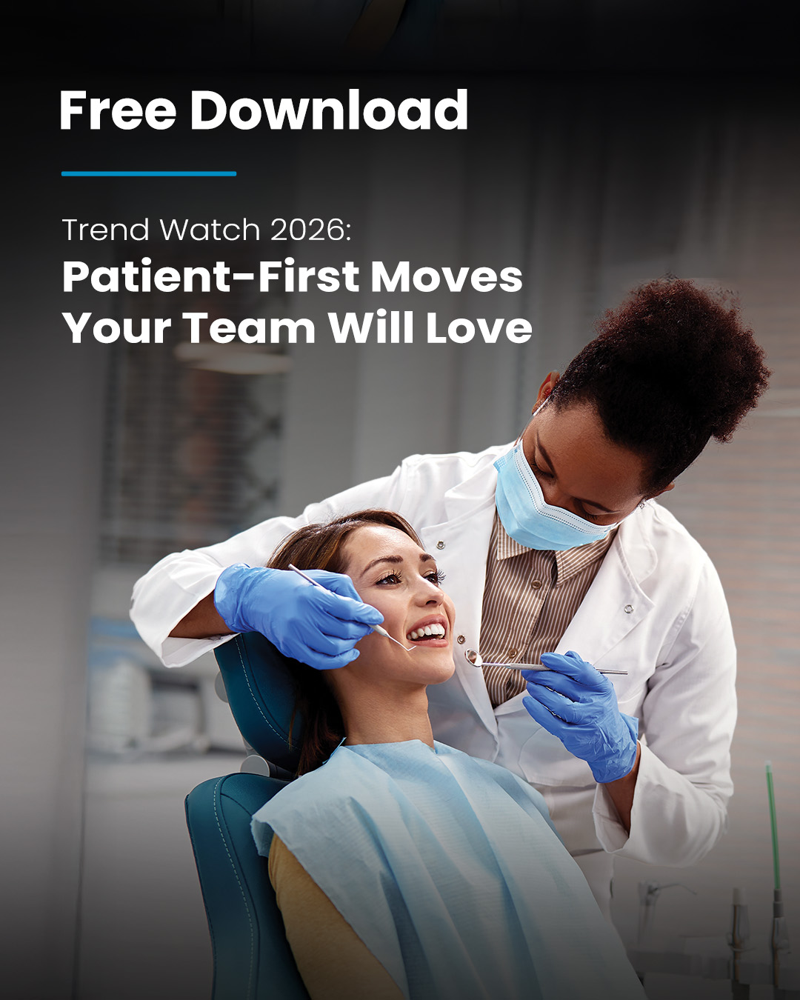
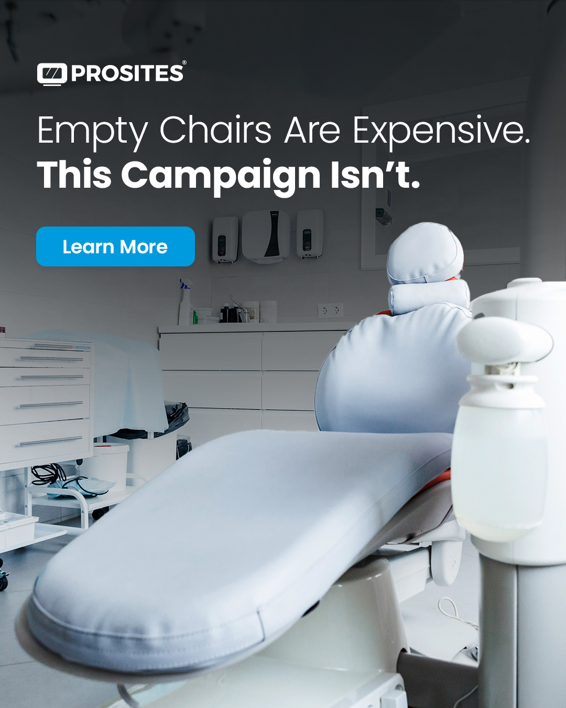
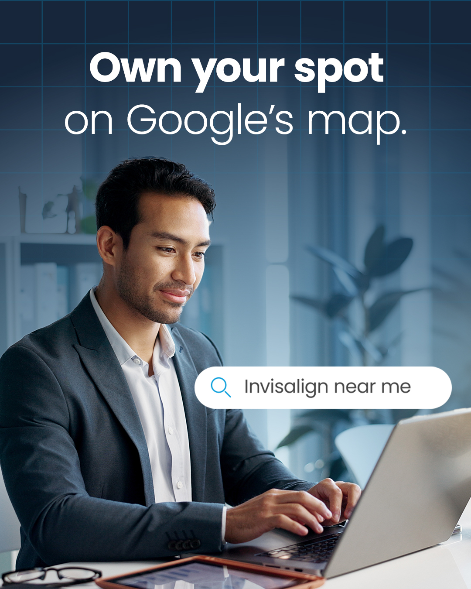
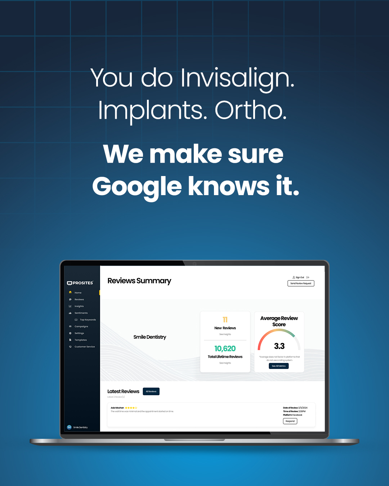
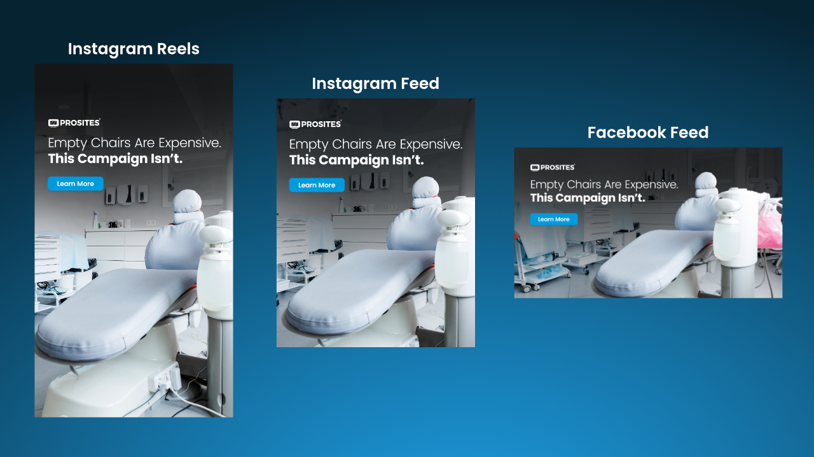
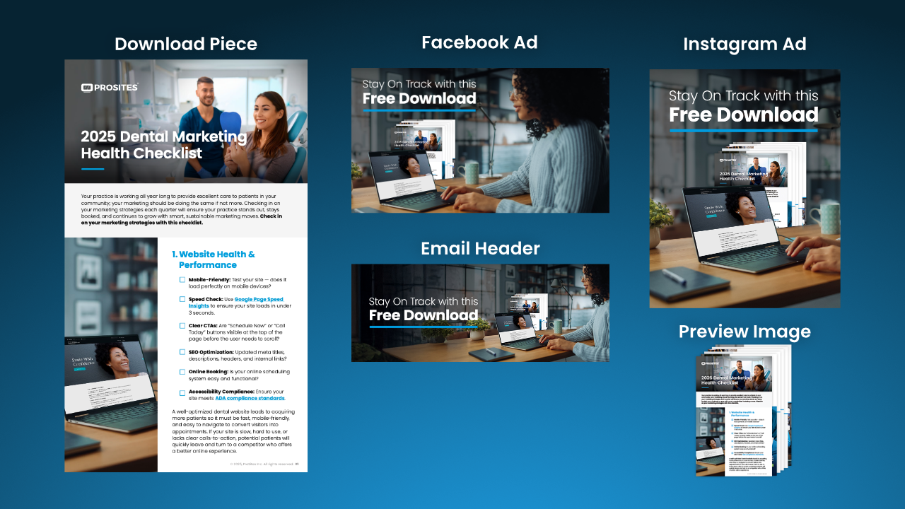
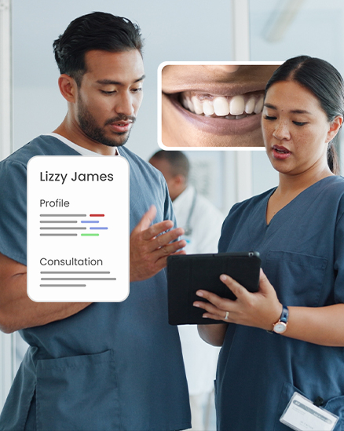
Printed media work included download kits and editorial ads, with a focus on strong visual hierarchy and clarity at scale. Translating brand standards into physical formats helped create materials that captured attention, communicated key messages effectively, and supported in-person engagement.
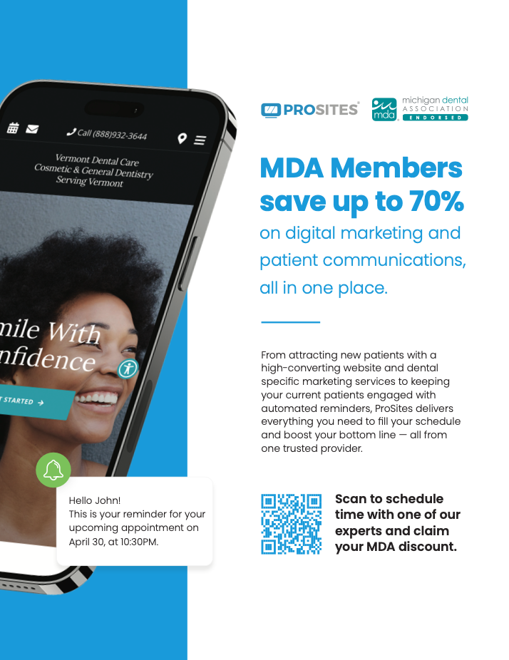
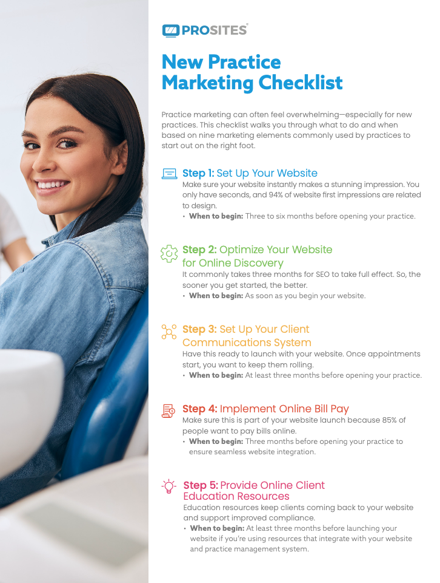
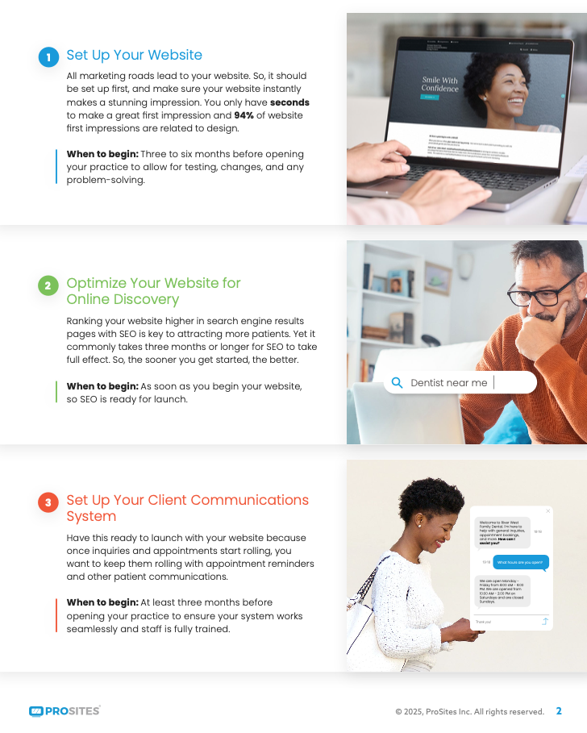
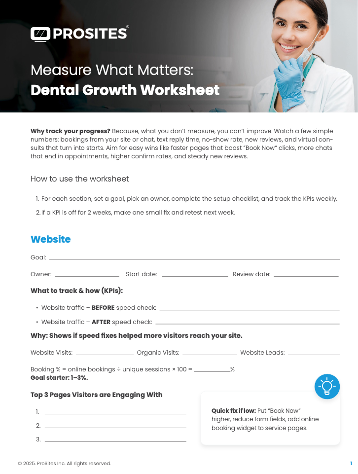
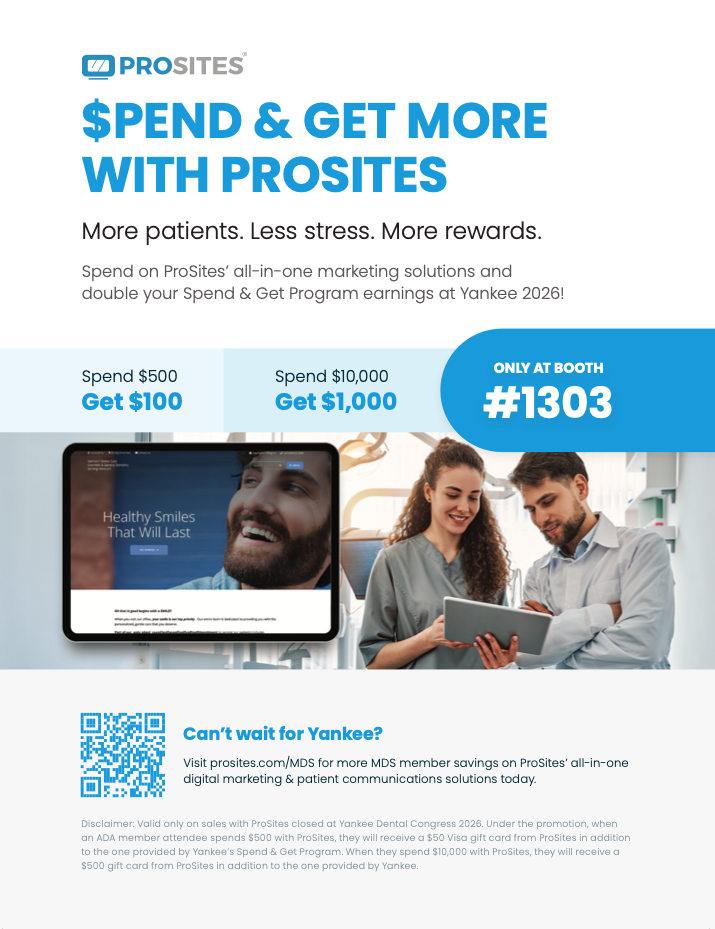